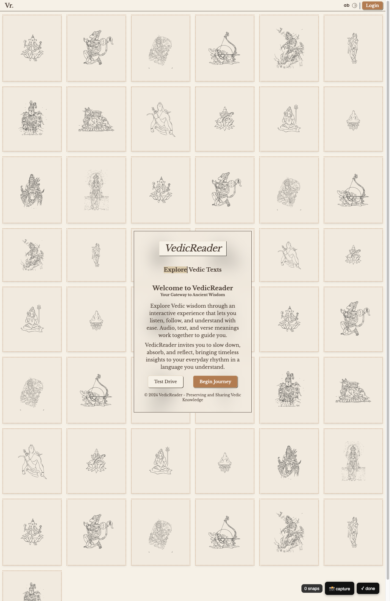
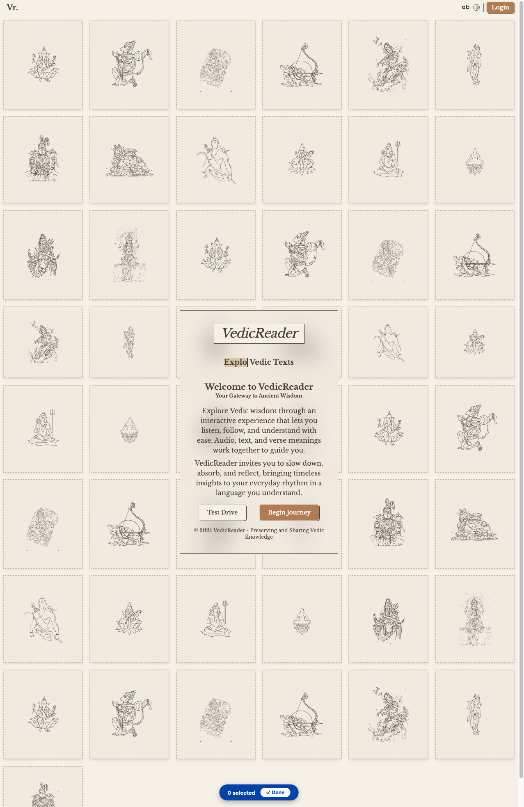

cdp_app
def cdp_app(
url, port:int=9223, user_data_dir:NoneType=None, wait:int=15
):Open url as an app window, with no tabs or address bar, in the debug Chrome.
Some pages need a login, a click on a button or a filled form before they show anything useful. A plain download cannot do this. This module drives a real Chrome through the Chrome DevTools Protocol (CDP), the interface that Chrome’s own developer tools use. It uses fastcdp for the connection.
The module uses one long-lived Chrome, which is separate from the Chrome you browse with. This debug Chrome listens for remote control on port 9223. It has its own profile, by default in ~/.cache/fastcdp/cdp-chrome. A site that you log in to in the debug Chrome stays logged in after a restart.
| Function | What it does |
|---|---|
cdp_setup |
Starts the debug Chrome and waits until it answers. |
cdp_connect |
Connects to the debug Chrome. It starts the Chrome first when none is running. |
cdp_ws |
Returns the websocket address of the debug Chrome. scrapling’s browser fetchers accept it as cdp_url. |
cdp_app |
Opens a URL in the debug Chrome as an app window, with no tabs or address bar. |
debug_ready |
Returns True when the debug Chrome is up. It never starts the Chrome. It asks the DevTools endpoint for /json/version, because Chrome opens the port a moment before it can answer there. |
When a Chrome already listens on the port, cdp_connect and cdp_ws use it. The headless and extra_flags arguments then have no effect.
The functions in this module are async. Call them with await. In synchronous code, wrap them in syncy, as the examples do. Most of them are methods that this module adds to the CDP connection and Page classes of fastcdp. These Page methods are the main ones:
| Method | What it does |
|---|---|
snapshot |
Returns a short text map of the controls on the page, for an agent. |
fill_form, act |
Operate those controls by their visible labels. |
calls |
Records the network requests that the page makes. |
md |
Returns the live page as markdown. |
Open url as an app window, with no tabs or address bar, in the debug Chrome.
Return the websocket address of the debug Chrome on port, starting a headless one if needed, for scrapling’s cdp_url=.
Connect to the debug Chrome on port, starting it first if it is not running.
Start the debug Chrome on port with its own profile and wait until it accepts connections.
True once the DevTools endpoint on port serves /json/version, which an open TCP port alone does not mean.
# debug_ready asks the endpoint, and an unused port answers nothing
with socket.socket() as s: s.bind(('127.0.0.1', 0)); free = s.getsockname()[1]
assert debug_ready(free) is False
assert _debug_ready is debug_ready # the old private name still works
# Chrome starts with `/dev/null` as stdin, never the caller's terminal
import tempfile
from fastcore.test import test_eq
from unittest import mock
seen = []
with mock.patch('subprocess.Popen', lambda *a, **kw: seen.append(kw)), mock.patch.dict(globals(), debug_ready=lambda port: True, _chrome_flags=lambda *a: ['chrome']):
syncy(cdp_setup(free, user_data_dir=tempfile.mkdtemp()))
test_eq([kw.get('stdin') for kw in seen], [subprocess.DEVNULL])CDP.eval runs a JavaScript expression in the page and returns its value as Python data. It waits for promises to resolve. It returns objects and arrays as dictionaries and lists. It raises JSError when the JavaScript throws an error. open_page opens a new tab at a URL and returns its Page.
Evaluate the JavaScript expr in the page and return its value as Python data.
JavaScript raised an error while an expression was evaluated in the page.
- **RootWebArea** "New Tab" `focusable=True` `url=chrome://new-tab-page/` [#1]
- **Iframe** "" [#44]
- **combobox** "Search Google or type a URL" `live=polite` `relevant=additions text` `focusable=True` `editable=plaintext` `settable=True` `hasPopup=listbox` [#24]
- **button** "Search by voice- **RootWebArea** "VedicReader" `focusable=True` `focused=True` `url=https://vedicreader.com/` [#2]
- **navigation** "" [#128]
- **link** "Vr." `focusable=True` `url=https://vedicreader.com/` [#129]
- **heading** "Vr." `level=4` [#130]
- **StaticText** "Vr." [#262]
- **Plain HTTP requests can inspect Chrome’s DevTools endpoint. /json/version describes the browser. /json/list lists its open tabs. The first cell below prints both.
The second cell closes a tab, quits the browser and starts it again in a visible window with cdp_setup(headless=False). Use a visible window to log in to a site by hand. The profile keeps the cookies, and they survive later restarts.
# list: is a debug Chrome up, and which tabs are open in it
import httpx
port = 9223
print('running on 9223?', _debug_running(port))
ver = httpx.get(f'http://127.0.0.1:{port}/json/version').json()
print('browser:', ver['Browser'], '| ws:', ver['webSocketDebuggerUrl'])
for t in httpx.get(f'http://127.0.0.1:{port}/json/list').json():
print(' ', t['type'], '|', t['title'][:40], '|', t['url'][:50])
print('live debug ports:', [p for p in (9222, 9223, 9224) if _debug_running(p)])running on 9223? True
browser: Chrome/150.0.7871.129 | ws: ws://127.0.0.1:9223/devtools/browser/bb4a47a3-b032-4afd-b398-83f1de66a3ab
page | Gayathri Dhyaanam | https://vedicreader.com/
page | New Tab | chrome://newtab/
iframe | chrome-untrusted://new-tab-page/one-goog | chrome-untrusted://new-tab-page/one-google-bar?par
browser_ui | Omnibox Popup | chrome://omnibox-popup.top-chrome/
browser_ui | Omnibox Popup | chrome://omnibox-popup.top-chrome/omnibox_popup_ai
service_worker | Service Worker chrome-extension://ilaikd | chrome-extension://ilaikdjkclophmmhodhgfmnimfeohkg
service_worker | Service Worker chrome-extension://hbicfl | chrome-extension://hbicflpnhfmdndpibdegbnkkpngjbhf
service_worker | Service Worker chrome-extension://epnhoe | chrome-extension://epnhoepnmfjdbjjfanpjklemanhkjgi
live debug ports: [9223]# close one tab, quit the browser, then start it again in a visible window for a manual login
import httpx, time
port = 9223
tabs = httpx.get(f'http://127.0.0.1:{port}/json/list').json()
if tabs: httpx.get(f"http://127.0.0.1:{port}/json/close/{tabs[0]['id']}")
cdp = syncy(cdp_connect(port=port))
try: syncy(cdp.quit()) # raises ConnectionClosedOK as the socket drops
except Exception: pass
time.sleep(1.5)
assert not _debug_running(port), 'browser should be down after quit()'
syncy(cdp_setup(port, headless=False))
assert _debug_running(port)
print('headed Chrome ready on', port, '— log in, then reuse it via fetch(url, session=True)')headed Chrome ready on 9223 — log in, then reuse it via fetch(url, session=True)cdp_app opens a URL in the debug Chrome as an app window, without tabs or an address bar. Use it for a local web app. It reuses the running browser when there is one. All its windows then share the same profile and logins. When no browser is running, it starts a visible one and waits up to wait seconds.
cdp_app returns a dictionary with these keys:
| Key | Value |
|---|---|
ok |
True |
url, port |
The arguments |
profile |
The profile folder |
reused |
True when a browser was already running |
target |
The id of the new window, or None when Chrome has not listed it within wait seconds (at most 5) |
The first test below checks the launch flags without starting a browser. The second runs cdp_app against stand-ins for Chrome.
# cdp_app's flags: an app window, headed, on the persistent profile. No browser is launched here.
flags = _chrome_flags(9223, _profile_dir(), False, ['--app=http://alpha.localhost:5001/'])
assert '--app=http://alpha.localhost:5001/' in flags
assert '--headless=new' not in flags # an app window you cannot see is useless
assert f'--user-data-dir={_profile_dir()}' in flags # same profile as cdp_setup, so logins carry
assert str(_profile_dir()).endswith('cdp-chrome')
assert _profile_dir('~/x') == Path.home()/'x' # user_data_dir wins, and ~ is expanded# cdp_app end to end against a stubbed browser: reuse a running Chrome, report its target.
# The stubs rebind this notebook's own names, because `cdp_app` resolves them at call time.
# Patching `fossick.cdp` would leave the definitions in these cells untouched.
import httpx, subprocess as _sp
_saved = (debug_ready, _sp.Popen, httpx.get)
launched = []
class _Targets:
def json(self): return [{'id': 'target-1', 'url': 'http://alpha.localhost:5001/'}]
try:
debug_ready = lambda port, host='127.0.0.1': True # a debug Chrome is already up
_sp.Popen = lambda args, **kw: launched.append(args)
httpx.get = lambda url, **kw: _Targets()
r = cdp_app('http://alpha.localhost:5001/', wait=1)
finally:
debug_ready, _sp.Popen, httpx.get = _saved
assert r['ok'] and r['reused'] is True
assert r['target'] == 'target-1' # the window is found by its url
assert r['url'] == 'http://alpha.localhost:5001/' and r['port'] == 9223
assert '--app=http://alpha.localhost:5001/' in launched[0]
assert f'--user-data-dir={_profile_dir()}' in launched[0]
print('cdp_app:', {k: r[k] for k in ('reused', 'target')})cdp_app: {'reused': True, 'target': 'target-1'}# Open two app windows on one browser and confirm the second reused the first's process.
a = cdp_app('https://example.com/')
b = cdp_app('https://example.org/')
assert a['ok'] and b['ok']
assert b['reused'], 'the second window should reuse the browser the first one started'
assert a['profile'] == b['profile']
print('windows:', a['target'], b['target'], '| reused:', a['reused'], b['reused'])calls records the requests that a page sends. It always opens a new tab. Given a url, it loads that page in the tab and keeps listening for tail seconds after the load. Without a url, it listens for twice tail seconds.
calls returns a dictionary keyed by request id. Each value is a request whose URL matches pattern, with its id in rid. When Chrome still has the response, the value also has the body under response_body. replay_xhr in fossick.core sends a recorded request again without the browser.
Record the requests matching pattern that a page sends, opening url first when given.
cdp_cookies exports the cookies of the debug Chrome. Pass a URL or domain to get only the cookies for that site. By default it returns a list in the format that Playwright and scrapling accept as cookies=. With as_dict=True it returns {name: value}. fetch(url, session=True) calls cdp_cookies and sends the cookies with the request. This sends your logged-in session.
Export the debug Chrome’s cookies, as a scrapling-ready list or as {name: value} when as_dict is True.
These methods read the page after its JavaScript has run. That page can differ a lot from the HTML that the server sent. html returns the current HTML. selector returns it as a scrapling Selector for CSS and XPath queries. md converts it to markdown with to_md. Pass sel to convert only the part that matches a CSS selector.
Return the current page as markdown, optionally only the part matching the CSS selector sel.
Return the current page as a scrapling Selector for CSS and XPath queries.
An agent needs to know what it can click or type into. The HTML of a full page is too long to read for that. snapshot builds a short text view from the accessibility tree, the description of the page that screen readers use. Each control becomes one line, [#id] role "name", such as [#42] button "Add to cart". The id is the number that Chrome gives the element. With interactive=False, snapshot also lists headings, forms and other landmarks.
type_text clears a field before it types. fastcdp’s fill_text adds to the text already in the field. click_settle clicks and then waits for the page to settle. It does not fail when a click on a single-page app does not navigate.
fill_form takes a dictionary of {label: value}. It finds each field by its visible label or name. It types into text fields and chooses options in drop-downs. When you pass submit, it then clicks the button or link with that name. It returns a new snapshot. It raises ValueError when no field matches a label, or when no button or link matches submit.
Fill form fields by visible label or name, optionally click a submit button, and return a new snapshot.
Click an element and wait for the page to settle, without failing when the click does not navigate.
Clear an input and type text into it.
Return a short text view of the page with one [#id] role "name" line per control.
ax_diff compares two snapshots and lists the lines that were added or removed. It ignores the element ids, which change on every navigation. It shows what an action changed, or (no change).
The next methods use CSS selectors. Use them when you know the markup of the page. node_for returns the id of the first matching element, or None. click_sel clicks an element and fill_sel types into it. Both raise ValueError when no element matches. eval_json calls a JavaScript function with Python arguments, which it converts to JSON.
Call the JavaScript function fn with args converted to JSON and return its result.
Clear the element matching the CSS selector sel and type text into it.
Click the element matching the CSS selector sel.
Return the id of the first element matching the CSS selector sel, or None.
Return the lines added or removed between two snapshots, ignoring element ids.
act runs a list of steps in order. Use it when an agent has planned a whole flow. Each step is a tuple:
| Step | Action |
|---|---|
('goto', url) |
Load the URL. |
('fill', label, value) |
Type the value into the field with that label. |
('click', label) |
Click the button, link or element with that name. |
('select', label, value) |
Choose an option in a drop-down. |
('wait', text) |
Wait until the text appears. |
('wait_sel', css) |
Wait until an element matches the selector. |
('read', css) or ('read', css, label) |
Read the matching part of the page as markdown. |
act returns a dictionary that holds the markdown from each read step. The key is the label, or the selector when the step has no label. An unknown step raises ValueError.
The cells below run against the debug Chrome and real sites, so the tests skip them. They export cookies, take a snapshot of a form, fill a field through a CSS selector, compare snapshots across a navigation with ax_diff, fill a form by label with fill_form, run the same steps through act, and record a store’s search API with calls.
# cdp_ws(): websocket URL for scrapling's cdp_url= ; cdp_cookies(): export the browser's cookies
ws = cdp_ws()
assert ws.startswith('ws://'), ws
ck = cdp_cookies('https://httpbin.org', as_dict=True)
assert isinstance(ck, dict)
lst = cdp_cookies('https://httpbin.org') # Playwright-format list for scrapling cookies=
assert isinstance(lst, list) and all(isinstance(c, dict) for c in lst)
print('ws ok |', len(ck), 'cookies')ws ok | 0 cookies# snapshot a form, fill a field through a CSS selector, then diff snapshots across a navigation
cdp = syncy(cdp_connect())
pg = syncy(cdp.open_page('https://httpbin.org/forms/post'))
snap = syncy(pg.snapshot())
assert snap.startswith('#') and '[#' in snap and 'textbox' in snap.lower() # [#id] role "name" lines
bid = syncy(pg.node_for('input[name=custname]')) # CSS selector -> backendNodeId
assert isinstance(bid, int)
syncy(pg.fill_sel('input[name=custname]', 'Ada Lovelace')) # clear + type via selector
# navigate to a different page and diff the two snapshots
syncy(pg.act([('goto', 'https://example.com')]))
diff = ax_diff(snap, syncy(pg.snapshot()))
assert diff != '(no change)'
print(diff[:200])-#
-https://httpbin.org/forms/post
+# Example Domain
+https://example.com/
-textbox "Customer name: "
-textbox "Telephone: "
-textbox "E-mail address: "
-radio " Small"
-radio " Medium"
-radio " Larg['form']collect gathers screenshots while a person browses. It adds a small bar with a capture button and a done button to the page. Each press of capture takes a screenshot with the bar hidden.
collect stops when one of these happens:
count screenshots have been taken.tout seconds have passed.stop event is set.With every_n, collect also takes a screenshot every every_n seconds without a button press. When you pass save_dir, collect saves each screenshot there as a PNG file named from prefix (by default the page title) and returns a list of (image, path) pairs. Without save_dir it returns a list of images.
BUTTON_JS, HIDE and SHOW are the scripts that draw, hide and show the bar.
Take screenshots each time the person presses the injected capture button, or on a timer, and return them.
📸 capture, ✓ done (or stop.set()) to finish. → None/
annotate lets a person point at parts of a page. The page outlines and numbers each element that the person clicks. An agent can use this to ask a person which button or field they mean.
annotate ends when the person presses done, when tout seconds have passed or when the stop event is set. It then takes a screenshot with the numbers on it. It returns (img, selected). selected is a list with one dictionary per element, with the keys n, role, name and selector (a CSS selector). With save_dir, annotate also saves the screenshot there as a PNG file named from prefix.
The scripts that annotate injects are ANNOTATE_JS, ANNOTATE_BAR_JS and ANNOTATE_CLEANUP_JS.
Let a person click elements to number them and return a screenshot with the numbers and a list of the chosen elements.
Click elements to annotate, ✓ Done when ready.
saved VedicReader.png
# CI has no debug Chrome, so a cell that connects to one must be `eval: false` or nbdev-test times out on it.
_live = [i for i,c in enumerate(read_nb('01_cdp.ipynb').cells) if c.cell_type=='code' and 'syncy(cdp_connect())' in c.source
and not c.source.startswith('#| export') and '#| eval: false' not in c.source]
assert not _live, _live